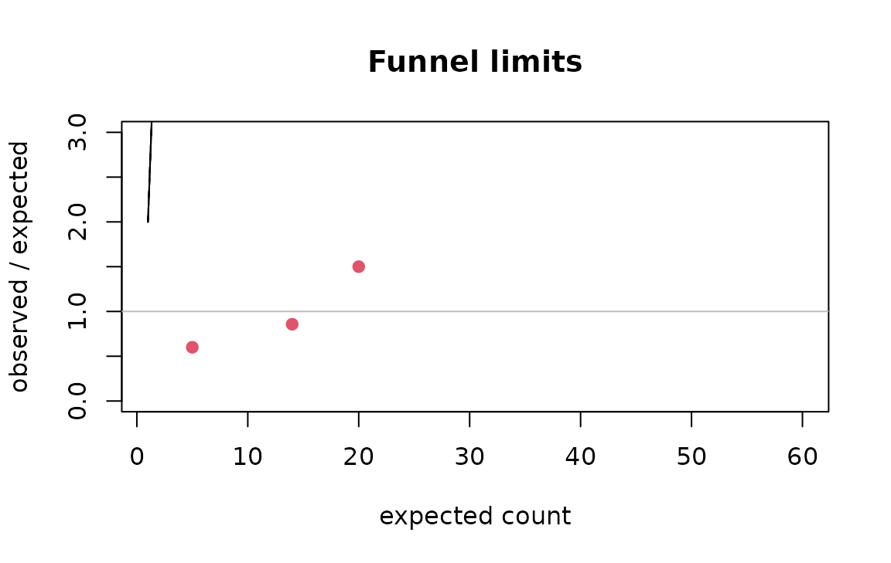

Small-area rates: expected counts, shrinkage, funnels and spatial autocorrelation
Source:vignettes/small-area-rates.Rmd
small-area-rates.RmdPublished tables often give a count per region, division or facility. Comparing those counts fairly needs three steps: adjust for the population each unit serves (and its composition), stabilise the ratios of small units, and judge each unit against limits that widen as its expected count shrinks. This vignette walks the four tools that do that.
Expected counts by indirect standardisation
If the overall rate applied everywhere, how many events would each unit have? That is the expected count. Adjusting for size alone:
d <- data.frame(
region = rep(c("North", "South", "East"), each = 2),
age = rep(c("18 to 24", "25 to 49"), 3),
n = c(30, 45, 12, 60, 8, 20),
pop = c(1000, 6000, 900, 9000, 400, 3500)
)
expected_counts(d$n, d$pop, d$region)
#> area observed population expected
#> 1 East 28 3900 32.81250
#> 2 North 75 7000 58.89423
#> 3 South 72 9900 83.29327Adjusting for size and age composition is indirect standardisation: each stratum’s overall rate is applied to the unit’s population in that stratum, then summed. This is the comparison that says something about the unit rather than about who lives there:
expected_counts(d$n, d$pop, d$region, strata = d$age)
#> area observed population expected
#> 1 East 28 3900 32.34430
#> 2 North 75 7000 62.27967
#> 3 South 72 9900 80.37603Standardised ratios with exact intervals
The ratio of observed to expected is the standardised incidence ratio
(SIR). sir() gives the exact Poisson interval, which is
what makes a small count honest:
sir(observed = c(30, 12, 3), expected = c(20, 14, 5),
area = c("North", "South", "East"))
#> area observed expected sir lower upper excess deficit
#> 1 North 30 20 1.5000000 1.0120437 2.141343 TRUE FALSE
#> 2 South 12 14 0.8571429 0.4428982 1.497256 FALSE FALSE
#> 3 East 3 5 0.6000000 0.1237344 1.753455 FALSE FALSE
#> significant
#> 1 TRUE
#> 2 FALSE
#> 3 FALSEAn observed count of three carries almost no information, and the interval says so rather than hiding it:
sir(3, 5)
#> observed expected sir lower upper excess deficit significant
#> 1 3 5 0.6 0.1237344 1.753455 FALSE FALSE FALSEEmpirical Bayes shrinkage
A tiny unit’s raw ratio is extreme by chance. Empirical Bayes shrinks each ratio toward the overall experience in proportion to how little its own data say: the pooled ratios share a Gamma prior whose parameters are estimated from all units, and each unit’s posterior mean is a weighted average of its own ratio and the prior mean, weighted by its expected count (Clayton and Kaldor 1987).
eb_rates(observed = c(30, 45, 2), expected = c(25, 50, 0.5),
area = c("North", "South", "Tiny"))
#> area observed expected sir eb shrinkage nu alpha
#> 1 North 30 25.0 1.2 1.1073869 0.5141392 26.98066 26.45506
#> 2 South 45 50.0 0.9 0.9414767 0.3460211 26.98066 26.45506
#> 3 Tiny 2 0.5 4.0 1.0751472 0.9814506 26.98066 26.45506The tiny area’s raw ratio of 4 is pulled sharply toward 1; the large areas barely move.
Funnel plots
A funnel plot draws control limits that narrow as the expected count grows (Spiegelhalter 2005): a ratio of 2 means nothing at an expected count of 2 and a great deal at 200. Units outside the limits are the ones worth a second look; the rest are consistent with the common rate.
funnel_limits(c(2, 20, 200))
#> expected level lower upper
#> 1 2 0.950 0.000 2.500
#> 2 20 0.950 0.600 1.450
#> 3 200 0.950 0.865 1.140
#> 4 2 0.998 0.000 4.000
#> 5 20 0.998 0.400 1.750
#> 6 200 0.998 0.790 1.225
e <- seq(2, 200, length.out = 60)
lim <- funnel_limits(e)
plot(e, lim$upper_95, type = "l", ylim = c(0, 3), xlab = "expected count",
ylab = "observed / expected", main = "Funnel limits")
lines(e, lim$lower_95)
lines(e, lim$upper_998, lty = 2)
lines(e, lim$lower_998, lty = 2)
abline(h = 1, col = "grey")
points(c(20, 14, 5), c(30, 12, 3) / c(20, 14, 5), pch = 19, col = 2)
The levels argument sets which limits are drawn; 95% and
99.8% (about two and three standard deviations) are the conventional
pair.
Spatial autocorrelation
Rates of neighbouring areas are rarely independent. Moran’s
I measures whether similar values cluster in space, against a
permutation null; neighbours is a list giving each area’s
adjacent areas:
nb <- list(2L, c(1L, 3L), c(2L, 4L), c(3L, 5L), c(4L, 6L), 5L) # six areas in a line
set.seed(1)
morans_i(c(1, 2, 3, 4, 5, 6), nb, n_perm = 999L)[c("I", "p_value")] # a gradient
#> $I
#> [1] 0.7142857
#>
#> $p_value
#> [1] 0.011
set.seed(1)
morans_i(c(1, 6, 1, 6, 1, 6), nb, n_perm = 999L)[c("I", "p_value")] # alternating
#> $I
#> [1] -1
#>
#> $p_value
#> [1] 0.199The null expectation of I is not zero but :
-1 / (6 - 1)
#> [1] -0.2Positive autocorrelation in the residual ratios means neighbouring units share something the standardisation did not capture, and a funnel that treats them as independent is optimistic.
From a published table to a judgement
-
expected_counts()with the strata the table publishes. -
sir()for the ratios and their exact intervals. -
eb_rates()where small units dominate. -
funnel_limits()to see which units are outside the common experience. -
morans_i()on the residuals before trusting independence.
References
Clayton, Kaldor (1987). Empirical Bayes estimates of age-standardized relative risks for use in disease mapping. Biometrics 43(3). Spiegelhalter (2005). Funnel plots for comparing institutional performance. Statistics in Medicine 24(8). Moran (1950). Notes on continuous stochastic phenomena. Biometrika 37(1/2).